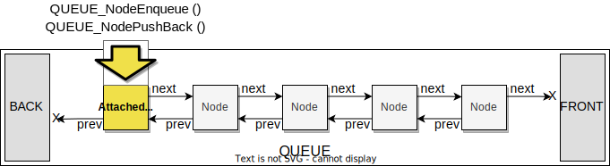
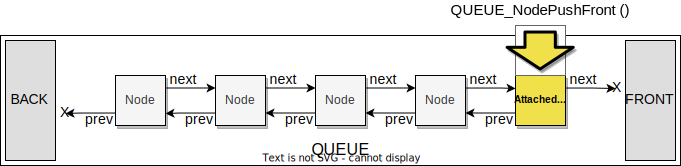
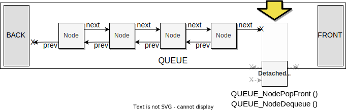
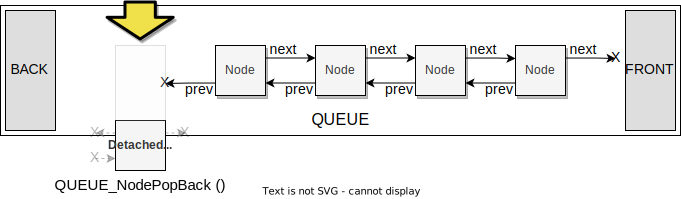
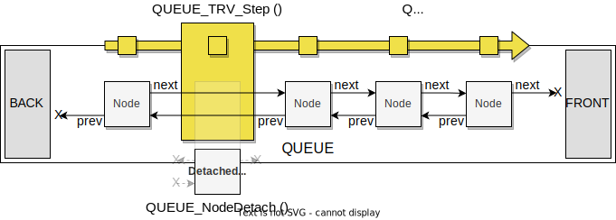

QUEUE
Description
Double-ended Queue implemented as a doubly-linked list data structure. It inserts elements either to the back of the list (push back) or to the front (push front) and removes them either from the front (pop front) or from the back (pop back). It can also serve as a simple, single-ended Queue to implement a FIFO (First-In, First Out) structure, using only two operations: insert elements to the back (Enqueue) and remove them from the front (Dequeue). Please see the Wikipedia article on Queues for detailed information about this data structure.
There is a Queue Traversator™ to traverse elements either from front to back or otherwise from back to front.
A typical use case is a FIFO (First-In, First-Out) element list. For example, tasks on the RetrOS scheduler waiting for their turn to execute.
To make a structure Queueable™, the application programmer need to embed a QUEUE_Node as the first structure member as follows:
struct MY_QUEUEABLE_STRUCT
{
// QUEUE_Node must be the first struct member.
struct QUEUE_Node node;
// Other members.
uint32_t a;
uint32_t b;
uint32_t c;
};
struct QUEUE queue;
QUEUE_Init (&queue);
struct MY_QUEUEABLE_STRUCT myqst1;
struct MY_QUEUEABLE_STRUCT myqst2;
// This node will be removed.
mysqt2.a = 1;
// Cast the MY_QUEUEABLE_STRUCT pointer to QUEUE_Node on insertion.
QUEUE_NodeEnqueue (&queue, (struct QUEUE_Node *)&myqst1);
QUEUE_NodeEnqueue (&queue, (struct QUEUE_Node *)&myqst2);
// Queue traverse.
struct QUEUE_TRV t;
QUEUE_TRV_Init (&t, &queue, QUEUE_TRV_Dir_BackToFront);
// Cast the QUEUE_Node pointer back to MY_QUEUEABLE_STRUCT on traversal.
struct QUEUE_Node *n;
while ((n = QUEUE_TRV_Step(&t)) != NULL)
{
struct MY_QUEUEABLE_STRUCT *myn = (struct MY_QUEUEABLE_STRUCT *) n;
// Member access and node detach.
if (myn->a == 1)
{
QUEUE_NodeDetach (&queue, n);
}
}
API guide
Queue
Initializes an empty queue.
Inserts and removes elements as a double-ended queue.
Inserts and removes elements as a single-ended queue.
Detaches a particular node by its QUEUE_Node. Usually used
when traversing a queue.
Traversator™
Initializes by passing the queue to traverse and the desired step direction to follow.
Performs a step and returns the current node’s QUEUE_Node.
Resets traversal to the initial position.
Design and development status
Feature-complete.
Changelog
Version |
Date* |
Author |
Comment |
|---|---|---|---|
1.0.0 |
2022.9.7 |
sgermino |
Initial release. |
* Date format is Year.Month.Day.
API reference
-
struct QUEUE_Node
The user should treat this as an opaque structure. No member should be directly accessed or modified.
-
struct QUEUE
The user should treat this as an opaque structure. No member should be directly accessed or modified.
-
enum QUEUE_TRV_Dir
Traverse direction.
-
enumerator QUEUE_TRV_Dir_FrontToBack
Front to back.
-
enumerator QUEUE_TRV_Dir_BackToFront
Back to front.
-
enumerator QUEUE_TRV_Dir_FrontToBack
-
struct QUEUE_TRV
The user should treat this as an opaque structure. No member should be directly accessed or modified.
-
void QUEUE_NodePushBack(struct QUEUE *const Q, struct QUEUE_Node *const Node)
Inserts a node at the Queue’s back as in the following figure:
- Parameters
Node – Node to insert.
-
void QUEUE_NodePushFront(struct QUEUE *const Q, struct QUEUE_Node *const Node)
Inserts a node at the Queue’s front as in the following figure:
- Parameters
Node – Node to insert.
-
struct QUEUE_Node *QUEUE_NodePopFront(struct QUEUE *const Q)
Removes a node from the Queue’s front as in the following figure:
- Returns
Detached node.
-
struct QUEUE_Node *QUEUE_NodePopBack(struct QUEUE *const Q)
Removes a node from the Queue’s back as in the following figure:
- Returns
Detached node.
-
void QUEUE_NodeEnqueue(struct QUEUE *const Q, struct QUEUE_Node *const Node)
Inserts a node at the Queue’s back. An alias of
QUEUE_NodePushBack()for consistency when using the Queue as single-ended.- Parameters
Node – Node to insert.
-
struct QUEUE_Node *QUEUE_NodeDequeue(struct QUEUE *const Q)
Removes a node from the Queue’s front. An alias of
QUEUE_NodePopFront()for consistency when using the Queue as single-ended.- Returns
Detached node.
-
void QUEUE_TRV_Init(struct QUEUE_TRV *const T, struct QUEUE *const Queue, const enum QUEUE_TRV_Dir Dir)
Initializes a Queue Traversal to step through all elements in the specified direction.
- Parameters
Queue – Queue to traverse.
Dir –
QUEUE_TRV_Dir, traverse direction.
-
struct QUEUE_Node *QUEUE_TRV_Step(struct QUEUE_TRV *const T)
Steps through a Queue returning the current position node or
NULLif the traversal reached the Queue back or front ends, depending on traverse direction. The user can detach the returned node (seeQUEUE_NodeDetach()) without affecting the ongoing node traversal, as seen in the following figure:- Returns
Node at current traverse position.
-
void QUEUE_TRV_Reset(struct QUEUE_TRV *const T)
Resets a Queue Traversal to the first step in the direction specified at initialization.
-
void QUEUE_NodeDetach(struct QUEUE *const Q, struct QUEUE_Node *const Node)
Detaches a node from its Queue and neighbor nodes.
- Parameters
Node – Node to detach, usually a node returned by
QUEUE_TRV_Step()when traversing a Queue and performing a search and extraction or node rearrangement.